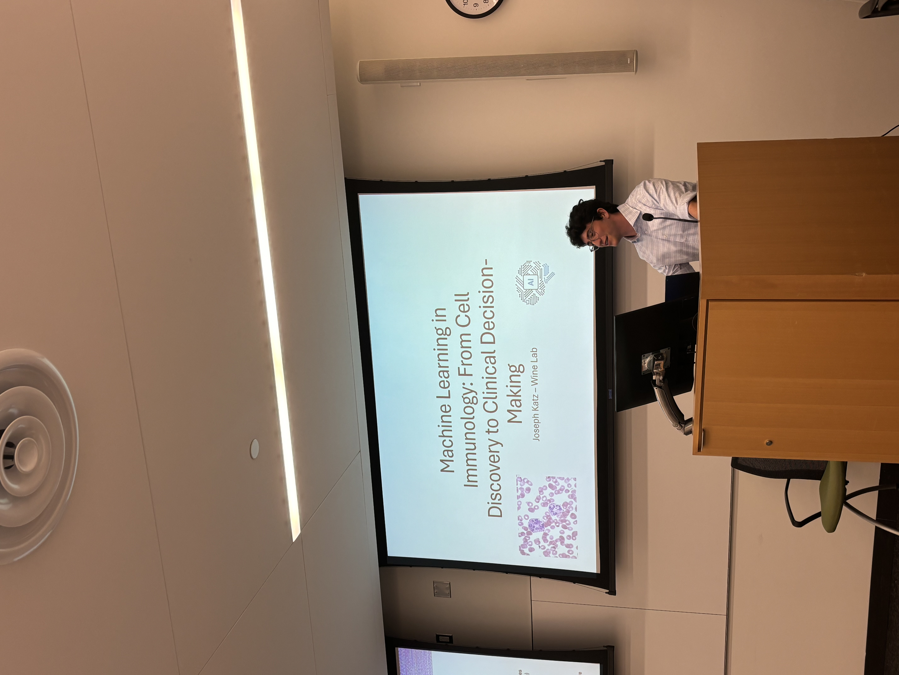
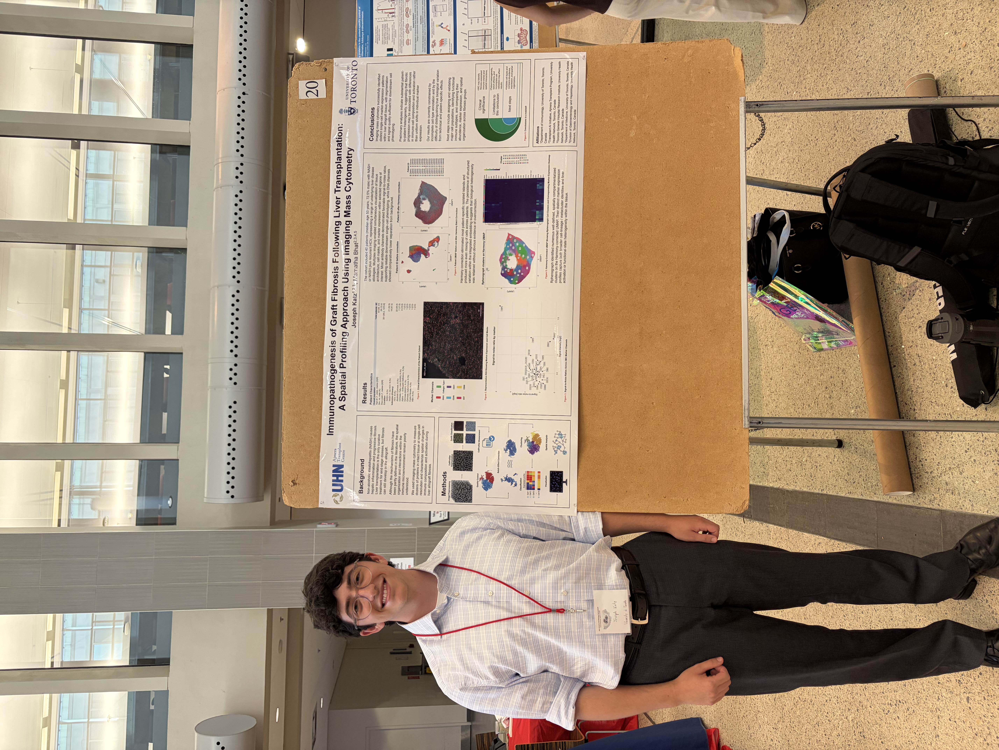
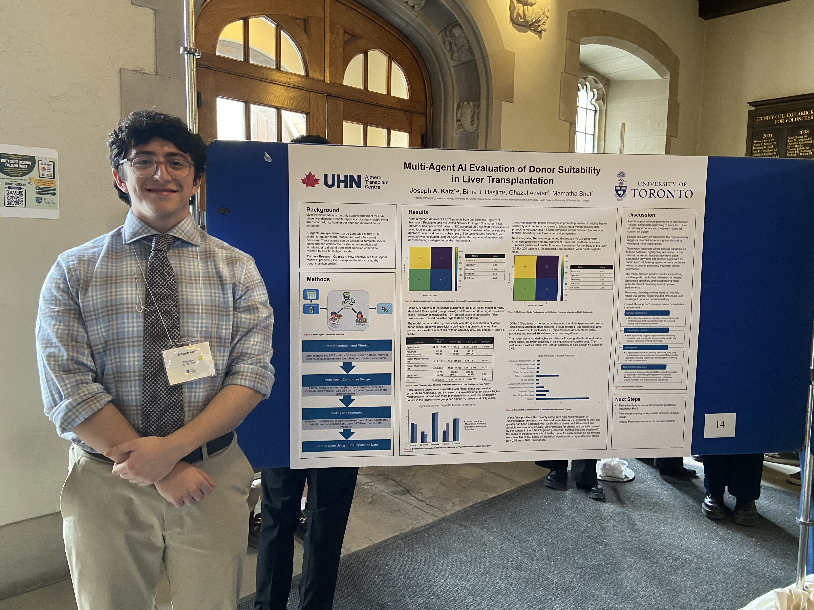

Manuscripts
Work in submission and preparation
Spatial Proteomics in Inflammatory Bowel Disease: From Tissue Architecture to Mechanisms and Therapeutic Opportunity
Katz JA, Wine E. (2026). Narrative review. Frontiers in Immunology.
In submission.
Immunopathogenesis of Graft Fibrosis Following Liver Transplantation: A Spatial Profiling Approach Using Imaging Mass Cytometry
Katz JA, Ghosh S, Bhat M. Primary research article.
In preparation.
Oral presentations
Talks & scientific exchange
CSI: Liver Fibrosis
Katz JA. Department of Immunology Fall Retreat, 2026. Toronto, Ontario. Lightning talk.
Best Lightning Talk award.
Machine Learning in Immunology: From Cell Discovery to Clinical Decision-Making
Katz JA. SickKids Cell and System Biology Department Trainee Seminar, August 2026. Toronto, Ontario. Oral presentation.

Conference contributions
Posters & abstracts
Immunopathogenesis of Graft Fibrosis Following Liver Transplantation
Katz JA, Ghosh S, Bhat M. A Spatial Profiling Approach Using Imaging Mass Cytometry.
Department of Immunology Fall Retreat, 2026, Toronto, Ontario: abstract and poster presentation.
Ontario Cell Biology Symposium, 2026, Niagara, Ontario: abstract and poster presentation.

Effects of Ultra-Processed Food Additives on Intestinal Epithelial Barrier Integrity in Inflammatory Bowel Diseases
D’Agostini E, Jiang C, Katz J, Wang ZY, Weiner M, Wine E. SickKids Summer Research Symposium, 2026. Toronto, Ontario. Abstract and poster presentation.
Multi-Agent AI Evaluation of Donor Suitability in Liver Transplantation
Katz JA, Azarfar G, Hasjim B, Bhat H.
University of Toronto Trinity College Undergraduate Research Conference, 2026, Toronto, Ontario: poster presentation.
UHN Summer Training And Research (STAR) Research Day Conference, Toronto, Ontario: poster presentation.

Honours thesis
Undergraduate research
Using Imaging Mass Cytometry to Describe the Immune Environment in Liver Allograft Fibrosis
University of Toronto, IMM450 Research Project in Immunology. Supervisor: Dr. Mamatha Bhat, Ajmera Transplant Program, University Health Network. Developed an independent R pipeline to investigate spatial immune changes in pre- and post-transplant liver biopsies.